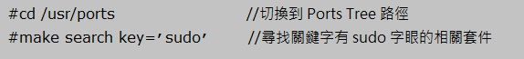

感謝您對「自由軟體鑄造場」的支持與愛護，十多年來「自由軟體鑄造場」受中央研究院支持，並在資訊科學研究所以及資訊科技創新研究中心執行，現已完成階段性的任務。 原網站預計持續維運至 2021年底，網站內容基本上不會再更動。本網站由 Denny Huang 備份封存。
也紀念我們永遠的朋友 李士傑先生（Shih-Chieh Ilya Li）。
也紀念我們永遠的朋友 李士傑先生（Shih-Chieh Ilya Li）。
技術專欄  FreeBSD 基礎設定（中）
FreeBSD 基礎設定（中）
FreeBSD 基礎設定（中）
建立日期 2011-05-05 13:31 最近更新在 2011-10-12 10:02
前言
在上一篇文章 FreeBSD 基礎設定（上），我們已經安裝及設定好主機的使用者帳號、網路資訊，以及啟動 FreeBSD 主機上 SSH 服務。經由上述的設定，FreeBSD 主機目前已經具備網路連通能力。而管理者也可以透過遠端登入管理主機了。接下來在本文中將會實作安裝 sudo 套件來限制及記錄管理者帳號 root 的使用狀況，並且建立便於操作的 Shell 執行環境。在文章最後則會將套件資料庫 Ports Tree 安裝來源指向到台灣本地鏡像網站，以便縮短相關軟體套件的下載時間。
在 Unix-Like 作業系統中，root 使用者帳號被稱為超級使用者帳號，如同 Microsoft Windows 的 Administrator 帳號，是作業系統中權限最大的管理帳號。系統管理帳號的權限到底有多大呢？它的權限大到您可以使用簡單的幾個字便可以自行摧毀作業系統（rm –rf /，此動作在 Microsoft Windows 中是無法辦到的）。由於 root 超級使用者帳號權限如此之大，強烈建議您使用一般使用者帳號登入主機進行操作，待需要提升權限時才切換為管理帳號，以免因為一時疏忽造成系統損壞。
在 FreeBSD 系統中當一般使用者帳號被加入 wheel 群組，表示該使用者帳號具有可以切換為管理帳號的權限。當使用一般使用者帳號遠端登入主機進行操作時，需要切換為管理帳號時只要輸入指令 su – 即可進行帳號轉換提升權限的動作。但是如果您的 FreeBSD 主機為多人共同管理時，這樣的身份切換方式就會造成管理上的困擾。例如您無法在事後得知是哪個使用者在哪個時間切換為 root 管理帳號，並且得知執行了哪些指令，因而想針對不同使用者設定不同的系統存取權限。上述狀況在多人共同管理同一部主機的情況下，內建的身份切換指令 su 是無法達成的，因此我們可以透過安裝 sudo 軟體套件來達成這樣的需求。
Sudo 套件就是為了彌補作業系統中內建的身份切換指令 su 不足所發展出來的軟體套件。透過安裝此套件後我們可以建立相關的使用者權限群組，並給予不同權限的指令來達到控管使用者權限的目的，配合相關設定，我們可以隨時查閱哪位使用者執行過 sudo 指令並對主機做了哪些動作，以便進行事後的追查。
對於 Unix-like 作業系統不熟悉的使用者，可能不知道 Shell 是什麼。簡單來說，Shell 就是介面軟體，提供使用者能夠存取作業系統核心功能。這樣的說明相信有些讀者可能看得很模糊。舉例來說，您要編輯一個 PHP 檔案，若您採用 Windows 內建的筆記本程式，或者是使用專門用來編輯程式語言檔案的 UltraEdit 程式來編輯檔案，兩者相比較，相信在操作與編輯流暢度來說絕對是 UltraEdit 勝出。同樣的道理，若使用作業系統中最基本的 Shell (sh) 與您設定好相關參數及環境設定的 Shell（例如 tcsh 或 bash）來比較時，絕對是設定好相關功能的 Shell 能夠有效幫助您操作以及管理作業系統。本文將以設定 TENEX C Shell (tcsh) 來進行說明。
Ports Tree 為 FreeBSD 下套件管理工具，其中收集的軟體套件種類非常繁多。因此當您需要安裝軟體套件時不用費心在網路上尋找相關套件，您只需要切換到相關的目錄下並執行安裝指令即可自動安裝完成，並且在安裝過程中若有相依套件時，系統會自行下載及安裝，當發生套件相依性問題也會自動嘗試解決。預設的情況下，軟體套件指定的伺服器位址在國外，然而這樣的設定會使得位於台灣的主機下載套件的時間拉長，此時我們便可以透過修改設定檔將伺服器位址指定為國內鏡像網站，如此一來將可有效縮短套件下載時間。
安裝及設定 Sudo 套件
實作環境
* FreeBSD 8.2 Release
* sudo-1.7.4.6
遠端登入主機後請執行 cd 指令切換至安裝 sudo 軟體套件的路徑後，執行安裝指令即可安裝套件。下列安裝指令中 make install clean 其實是 make install 加上 make clean 二個指令所合併而成的短指令語法，此指令表示先執行安裝套件的動作，當系統下載好軟體套件要安裝前，會將套件解壓縮，因此會產生相關暫存檔案，所以當安裝套件完成之後，系統會接著清除相關暫存檔案。
▲ 圖1 安裝 sudo 套件
安裝套件完畢後請使用指令 visudo 來修改 sudo 設定檔內容，請不要使用 vi 進行修改。原因在於當執行 visudo 指令後系統會自行找到 sudo 設定檔 /usr/local/etc/sudoers 且自動進入修改模式。當我們修改完成後若設定檔內容中有發生語法或斷行等錯誤時，系統會跳出警告訊息提醒我們哪裡發生錯誤。在此次實作中我們會修改到的 sudo 設定檔內容為將 wheel 群組那行的註解符號拿掉，以及加上 Log 記錄檔的內容。另外要注意的是，當設定檔修改完畢後，由於指定的 sudo 記錄檔目前並不存在於系統中，因此請手動建立該檔案。相關操作如下所示：

▲ 圖2 修改 sudo 設定
上述 sudo 設定檔內容中表示加入 wheel 群組的使用者可以使用 sudo 指令來切換為管理者帳號。當使用者第一次使用 sudo 指令時系統會再次詢問使用者密碼，當成功通過密碼驗證之後便會切換為管理者帳號 root 來執行其指令，並且在 5 分鐘之內若該使用者再次執行 sudo 指令時系統便不會再詢問密碼。接著我們可以測試 sudo 記錄檔是否正常運作，另外開啟一個 SSH Client 視窗並使用一般使用者帳號進行遠端登入。例如使用 weithenn 這個一般使用者帳號（已加入 wheel 群組）登入系統並嘗試再次安裝 sudo 套件，相信會得到權限被拒絕 (Permission denied) 的錯誤訊息回應。此時您可以使用 sudo 搭配安裝指令再次執行即可進行再次安裝（系統會顯示該套件已安裝過）。當執行安裝指令完畢後，請查看 sudo 記錄檔便會看到相關的記錄內容。

▲ 圖3 測試 sudo 記錄功能是否運作
經由上述的驗證動作後我們可以確定 sudo 記錄檔機制目前正確運作中，而且您可以從 sudo 記錄檔中清楚得知是在什麼時間點 (Mar 15 16:27:24)、哪個使用者帳號 (weithenn)、在哪台主機 (bsd82)、從遠端登入此台主機 (pts/0)、在系統中哪個路徑 (/usr/ports/security/sudo)、切換成什麼身份 (root)、執行什麼指令 (make install clean)。
若您覺得 sudo 記錄檔中的資訊仍然有不足的地方，例如使用者執行指令 sudo su – 直接切換為 root 身份，如此一來後續所執行的指令便不會記錄在 sudo 記錄檔內，您可透過 lastcomm 指令來查看每一位登入主機的使用者在登入期間執行的詳細指令內容。但要執行 lastcomm 指令之前要先將啟動此功能的參數加入至 /etc/rc.conf 設定檔中，並啟動該服務才能正確運作。
▲ 圖4 啟動 accounting 服務記錄使用者動作
待 accounting 服務啟動後，系統便會將每一位登入主機的使用者，在主機上執行指令的歷程記錄存放於 /var/account/acct 檔案中，您便可以隨時使用指令 lastcomm 來查看每個使用者登入主機的執行狀況。並且，系統管理者可以隨時查看使用者的視窗畫面，即時觀察該使用者對主機進行哪些動作及指令執行結果。使用的方式很簡單，管理者先執行 w 指令來查看有哪些使用者登入此台主機，配合使用 watch 指令以及使用者的 TTY 名稱，即可將使用者目前的視窗畫面即時顯示於管理者視窗畫面上。
▲ 圖5 查看登入主機的使用者並抓取其視窗畫面
如上述說明，當管理者欲查看使用者 chris 的視窗操作畫面時，便可使用指令 watch pts/0 在管理者視窗畫面中即時顯示使用者 chris 操作畫面的一舉一動，管理者若想要回到自已的視窗畫面時請使用組合鍵 Ctrl + G 即可。
設定 tcsh Shell 操作環境
對於許多 Linux 的使用者來說，習慣的 Shell 應該是 bash (Bourne-Again Shell)，而筆者個人則習慣於 tcsh Shell 環境下來管理機器。基本上使用哪種 Shell 全憑個人使用習慣即可，而下列的相關設定及環境參數也都將以筆者習慣的 tcsh Shell 來進行舉例說明。
FreeBSD 作業系統安裝完成後即內建有 sh、csh、tcsh 等 3 種 Shell（bash 需另行安裝），使用 tcsh Shell 在不設定任何參數的情況下便擁有使用【Tab】鍵自動補齊檔名及搜尋上一次輸入指令的功能。所謂【Tab】鍵補齊檔名功能，舉個例子來說，假如我們想要查看主機的網路資訊時，會鍵入 ifconfig 指令，在輸入 ifc 之後即按下【Tab】鍵，此時作業系統會尋找相關 ifc 開頭的指令，【Tab】補齊檔名功能便會自動補齊為 ifconfig 指令。補齊檔名功能不僅僅能使用於指令方面，對於檔案及目錄也具有相同的功能。以搜尋上一次輸入指令的功能為例，分別輸入了 ls 某個目錄內容及 cd 到某個目錄內，當您想要再次執行時只要打 ls 再按【上方向鍵】則 tcsh Shell 會自動找出最近執行過開頭為 ls 的指令，這樣的功能對於操作作業系統來說很方便。
除了預設的功能外我們可以設定 Shell 的環境變數來加強操作的便利性，以執行 ifconfig 指令來說，其實該指令的完整路徑為 /sbin/ifconfig，但是為何我們輸入 ifconfig 指令便可順利執行？這是因為預設的 tcsh Shell 環境設定檔已經將作業系統經常會使用到的指令路徑載入環境變數中，因此我們可以在不用鍵入絕對路徑的情況下直接執行相關指令。
以 tcsh Shell 來說當使用者登入 FreeBSD 主機後該使用者帳號會依序載入 /etc 的 csh.cshrc 及 csh.login 通用環境設定檔，再來則是載入個人家目錄下的 .cshrc 及 .login 個人環境設定檔。當通用環境設定檔與個人環境設定檔有衝突時會以套用個人環境設定檔為最後結果。以下為筆者個人習慣設定於 /etc/csh.cshrc 的通用環境設定檔內容：
▲ 圖6 tcsh Shell 通用環境設定檔內容
當您使用 tcsh Shell 之後若您在系統安裝套件後，請您記得執行 rehash 指令來重新建立系統的 Hash Table ，這樣便可直接執行相關指令，否則必須鍵入絕對路徑或重新登入系統才能正常執行，若安裝套件後未重新建立 Hash Table 便直接指令，將會得到無法找到指令 (Command not found) 的錯誤訊息。
設定 Ports Tree 環境
我們可以透過修改 /etc/make.conf 設定檔將 Ports Tree 鏡像網站指定至台灣境內各所大學。目前台灣可使用的鏡像網站共有 16 個，安裝軟體套件時即可就近下載，加快套件下載的速度。提醒您設定列表時，由於交大資工鏡像網站 (ftp.tw.freebsd.org) 很多人存取因而非常忙碌，為了避免塞車建議您不要將此站排在第一筆。
▲ 圖7 指定 Ports Tree 鏡像網站至台灣境內各所大學
完成上述設定之後當您需要安裝軟體套件時，若您知道套件名稱時可以透過指令 whereis 加上套件名稱來找到該套件的安裝路徑在哪裡。例如我們知道安裝套件的名稱為 sudo，就可以找到其安裝套件的完整路徑為 /usr/ports/security/sudo，如下所示
▲ 圖8 查看 sudo 指令及安裝路徑
若您不知道想要安裝套件的名稱或僅知道套件的關鍵字，那麼您可以透過在 Ports Tree 搜尋套件的方式來達成。如下所示我們要搜尋的套件關鍵字為 sudo，執行後系統便會將 Ports Tree 中有關 sudo 關鍵字的相關套件列出：

▲ 圖9 尋找相關套件
更新 Ports Tree
當系統使用一段時間後您想要安裝某個套件時，該套件或許已經釋出了相關安全性更新版本或者增加新功能的版本，此時我們可以在安裝套件以前先更新 Ports Tree 使得您安裝的套件得以保持在最新且穩定的版本。在本文中採用比老牌 CVSup 更新速度更快並以 C 語言重新改寫的 CSUP 套件更新工具。請先將相關參數設定新增於 /etc/make.conf 設定檔內。完成設定檔修改後接下來只要切換到 Ports Tree 目錄下執行更新指令，即可更新整個 Ports Tree 內所有套件資訊。在您執行更新 Ports Tree 動作後可以看到更新套件的站台位址、Ports Tree 版本、哪些套件其檔案被更新或刪除等相關資訊，提醒您當您更新 Ports Tree 完成後要安裝套件以前，請記得先行查看 /usr/ports/UPDATING 檔案了解更新 Ports Tree 日期及相關資訊，像是升級某套件需注意的事項等，並且在更新 Ports Tree 後記得更新 Ports Tree 的索引檔以便同時更新搜尋套件的索引內容。
▲ 圖10 修改 /etc/make.conf 設定檔並更新 Ports Tree
結語
本文討論了安裝 sudo 套件來限制及記錄管理者帳號 root 的使用記錄，並且搭配 lastcomm 及 watch 機制以了解使用者到底對作業系統做了什麼動作，並且透過設定 Shell 環境設定檔使得操作系統時的便利性提高並加快效率，在最後則是將安裝套件的來源指向至台灣本地鏡像網站，以加快軟體套件下載時間，也順道說明更新 Ports Tree 套件後需要注意的事項。
在下一篇文章中將討論 FreeBSD 如何進行套件的安全性更新作業，當主機上線運作如何定期將系統的相關記錄例如安全性記錄、磁碟空間使用狀況、登入資訊等定期寄送給管理人員，最後則是探討如何對遠端登入服務 SSH 做基本的安全性設定。
您也許有興趣閱讀以下文章:
- FreeBSD 基礎設定（下） - 2011-05-18
- FreeBSD 基礎設定（上） - 2011-04-22
專欄總覽


自由軟體鑄造場 製作 最佳瀏覽狀態：IE7或Firefox2.0以上 (建議使用Firefox) ‧ 解析度1024*768
E-Mail：contact@openfoundry.org Address：台北市南港區研究院路2段128號 中央研究院資訊科學研究所 . 隱私權條款. 使用條款
E-Mail：contact@openfoundry.org Address：台北市南港區研究院路2段128號 中央研究院資訊科學研究所 . 隱私權條款. 使用條款